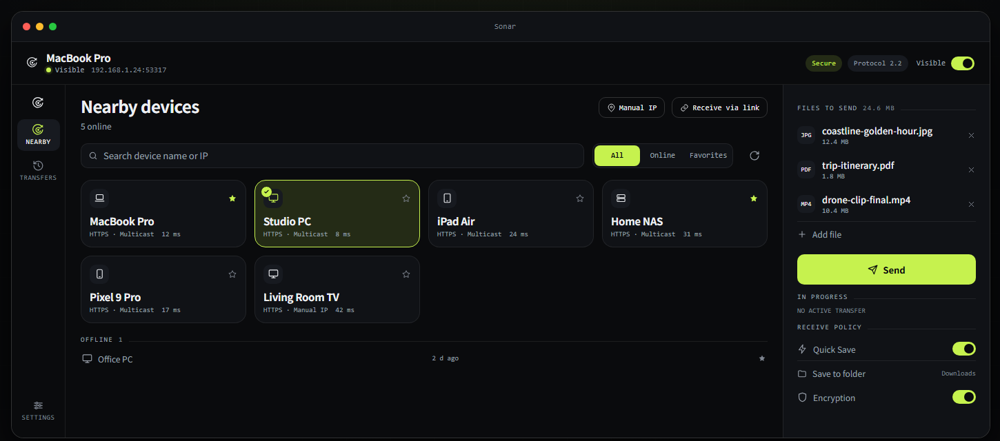
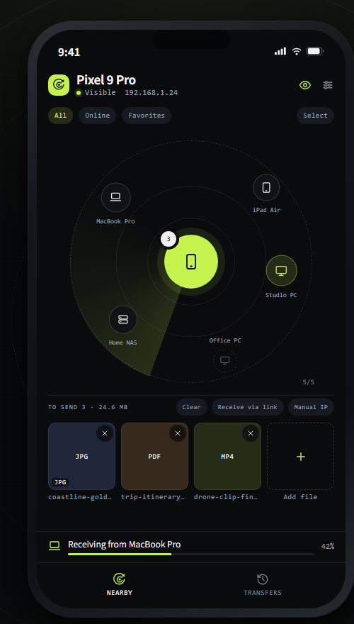
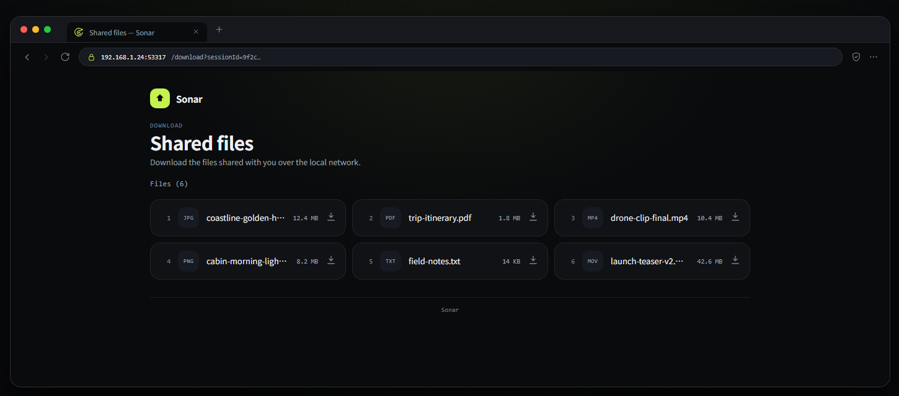

无需外网
通信仅限局域网。断网或隔离网环境下同样可用，不会向互联网发起请求。
界面
无需输入 IP，无需扫码。桌面与手机看到的是同一组设备。


对方无需安装应用 —— 打开浏览器链接即可接收文件。
链接接收
开启「链接接收」后生成局域网地址，对方用任意浏览器打开即可逐个下载文件。

核心特性
通信仅限局域网。断网或隔离网环境下同样可用，不会向互联网发起请求。
兼容 LocalSend 协议 v2，可直接与安装 LocalSend 的设备互传，无需统一客户端。
设备使用自签证书，连接时双向验证。身份以证书的 SHA-256 指纹为准，而非对方自报的名称。
使用步骤
设备接入同一 Wi-Fi 或网线，也可通过热点直连。
附近设备自动出现，选中后选择文件，或直接拖入文件。
接收方确认后开始传输，过程中显示进度与速度，可随时取消。
平台
任意两个平台之间均可互传。
技术
服务端与客户端均由 Rust 实现，使用协议 v2。界面只处理事件，计算不占用主线程。
UDP 多播发现，每个网络接口对应一个 socket，并支持 IPv6；回应通过 HTTP 单播返回。
设备使用自签证书，连接时强制校验。指纹不符的注册请求直接丢弃。
Apache-2.0。本项目基于 LocalSend，由个人维护。
常见问题
已提供 Windows 与 Android 安装包，Android 仅支持 arm64-v8a。